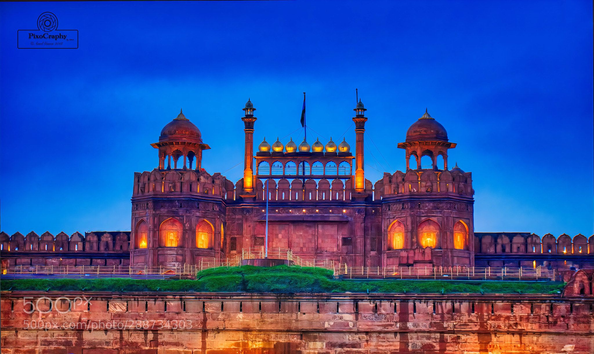

Historical Places In India 😎
1
Agra, Taj Mahal

Discover Red Fort in Delhi which is one of the famous places in India. Meet the boss of Indian historical places. If you consider the top 10 historical places in India, Taj Mahal will always be ranking high in the list. Explore the ultimate epitome of love, the Taj Mahal, whose grandeur remains unmatched in history and today this is one of the weekend getaways from Delhi. This opulent white marble structure was commissioned to be built in 1632 by Shah Jahan for his late wife Mumtaz Mahal. It took around 22 years to complete this magnificent structure that is considered one of the most famous historical places in India.
According to local legend, it was believed that Shah Jahan cut off the hands of all the workers who built the Taj Mahal so that a similar monument could not be built.
Interesting fact: A shopping complex and hotel inspired by the Taj Mahal is being constructed in Dubai and is estimated to be four times larger in size.
Entry fee: Indians- INR 40
Foreigners- INR 1000
No entry for children below 15 years of age
Open from: 30 Minutes before sunrise and closes 30 Minutes before sunset
Must see: Nighttime shows of the Taj Mahal
Built By: Shah Jahan
Built In: 1648
2
Red Fort, Delhi

One of the historical tourist places in India, the Red Fort was constructed over ten years from 1638 to 1648. This fort was constructed when Shah Jahan shifted the capital from Agra to Delhi and it was then known as the Qila-e-Mubarak. This octagonal fort is one of the most famous historical places in north India and is also the site where the President gives his speech on Independence Day. The Red fort is truly remarkable and one of the best historical places in India.
Interesting fact: The Red fort was actually white as it was made of limestone. The British painted it red when the limestone started chipping off.
Entry fee: Indians- INR 10
Foreigners- INR 250
Open from: 9:30 am to 4:30 pm daily (Closed on Mondays)
Must see: The Palace of Colors or the ‘Rang Mahal’ where the emperor’s wives, mistresses and maids resided.
Built By: Shah Jahan
Built In: 1639
3
Jallianwala Bagh, Punjab

The infamous Jallianwala Bagh massacre took place near this monument near the Golden Temple in Amritsar. Covering around 6.5 acres, it is the place where General Dyer ordered a mass shooting on Baisakhi. Thousands of innocents succumbed to death in this incident. It was one of the incidents that ignited the fire of Independence revolution. A memorial was erected here on 13th April 1961 by the then president, Dr. Rajendra Prasad.
Interesting fact: Infamous Jallianwala Bagh Massacre took place here
Entry fee: Free
Open from: 6:30 am to 7:30 pm
Must see: The step well that took the centre stage during the massacre.
Built By: Benjamin Polk (memorial)
Built In: 1961 (memorial)
4
Victoria Memorial, Kolkatai

The Victoria Memorial in Kolkata is one of the most historical tourist places in India and was built during the peak of the British era in India. The then Viceroy Lord Curzon laid down the idea of this monument but its actual design was done by Sir William Emerson.
Multitudes of lush gardens, a museum filled with British memorabilia including weapons, paintings, sculptures, artifacts etc and royal portrait of the Queen are what you will find in this beautiful monument. One of the best paintings you will find here is the one by Russian artist Vasili Verestchagin. This painting depicts the Prince of Wales in Jaipur in 1876.
Interesting fact: There are two sets of mysterious inscriptions on the monument. One is “VRI” which means Victoria Regina Imperatrix and the other is “Dieu Et Mon Droit”. The first means Victoria Queen and Empress and the latter means “God and my right”.
Entry fee: Indians- INR 20
Foreigners- INR 200
Open from: 5:30 am to 6:15 pm daily
Must see: The black bronze statue “Angel of Victory” that lies on the apex of the memorial’s dome. In favorable weather, it also acts as a weathercock.
Built By: Lord Curzon
Built In: 1921
5
Fatehpuri Sikri, Uttar Pradesh

One of the historical tourist places in India, the Red Fort was constructed over ten years from 1638 to 1648. This fort was constructed when Shah Jahan shifted the capital from Agra to Delhi and it was then known as the Qila-e-Mubarak. This octagonal fort is one of the most famous historical places in north India and is also the site where the President gives his speech on Independence Day. The Red fort is truly remarkable and one of the best historical places in India.
Interesting fact: Many barren women would come to the tomb of the Sufi saint Salim Chisti to pray for children.
Entry fee: Indians- INR 40
Foreigners- INR 510
Open from: 6 am to 6 pm (Closed on Fridays)
Must see: Diwan-i-Aam and the Diwan-i-Khas
Built By: Akbar
Built In: 1569